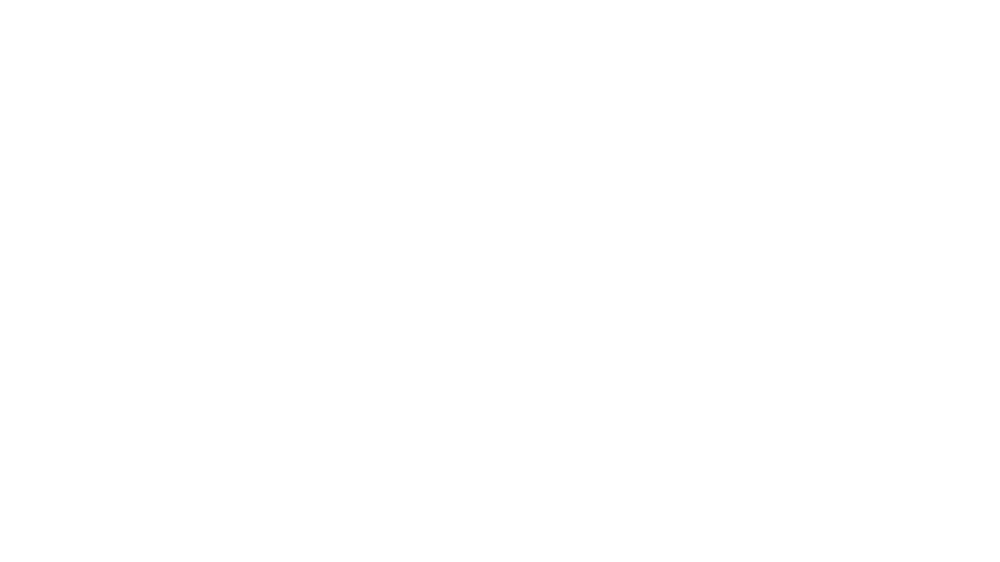
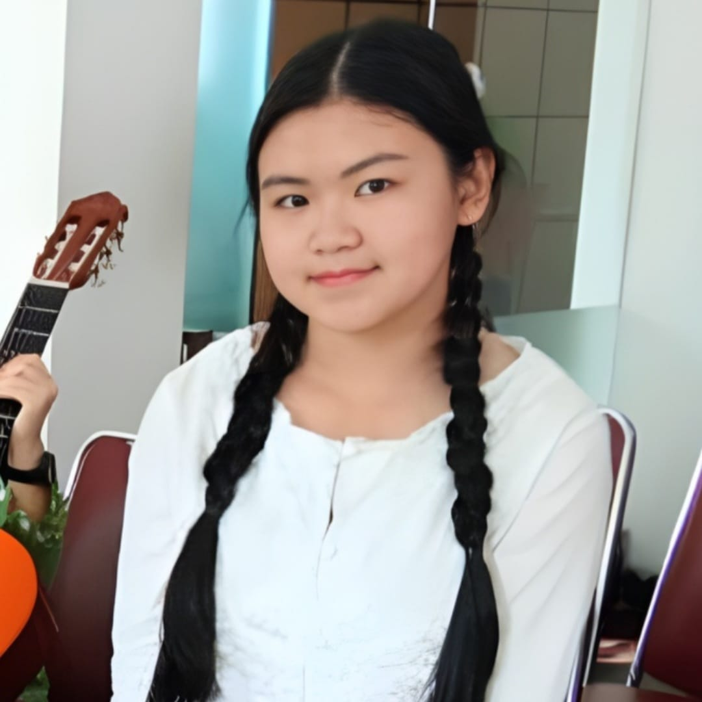
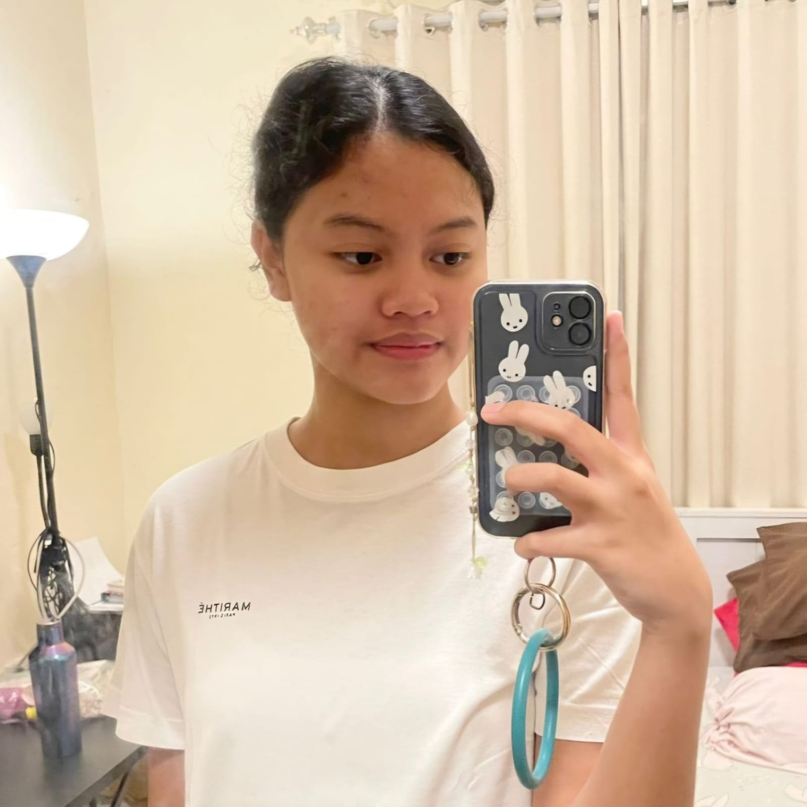
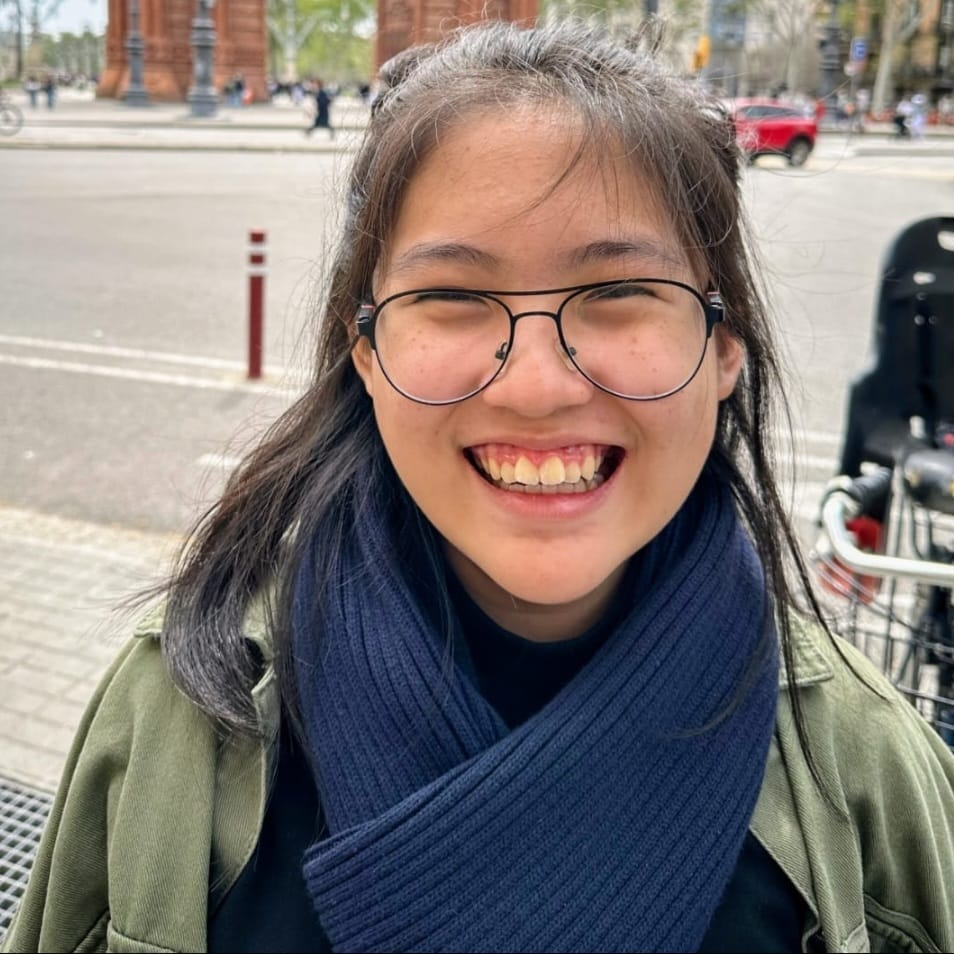
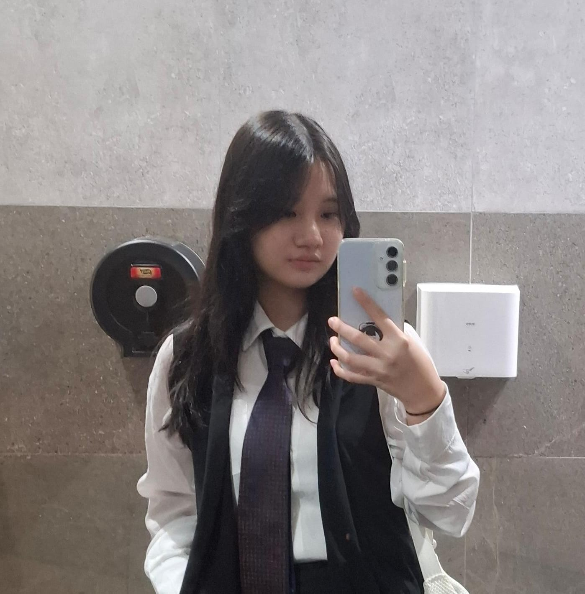
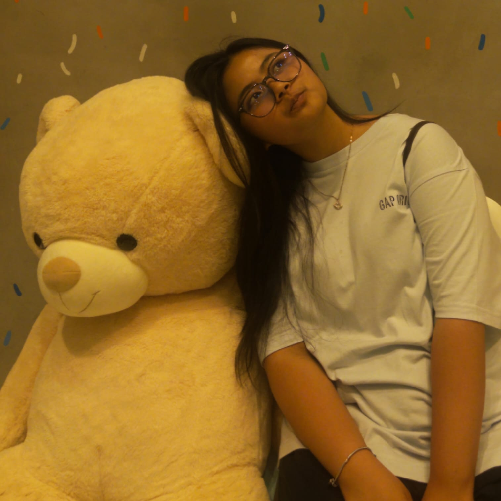
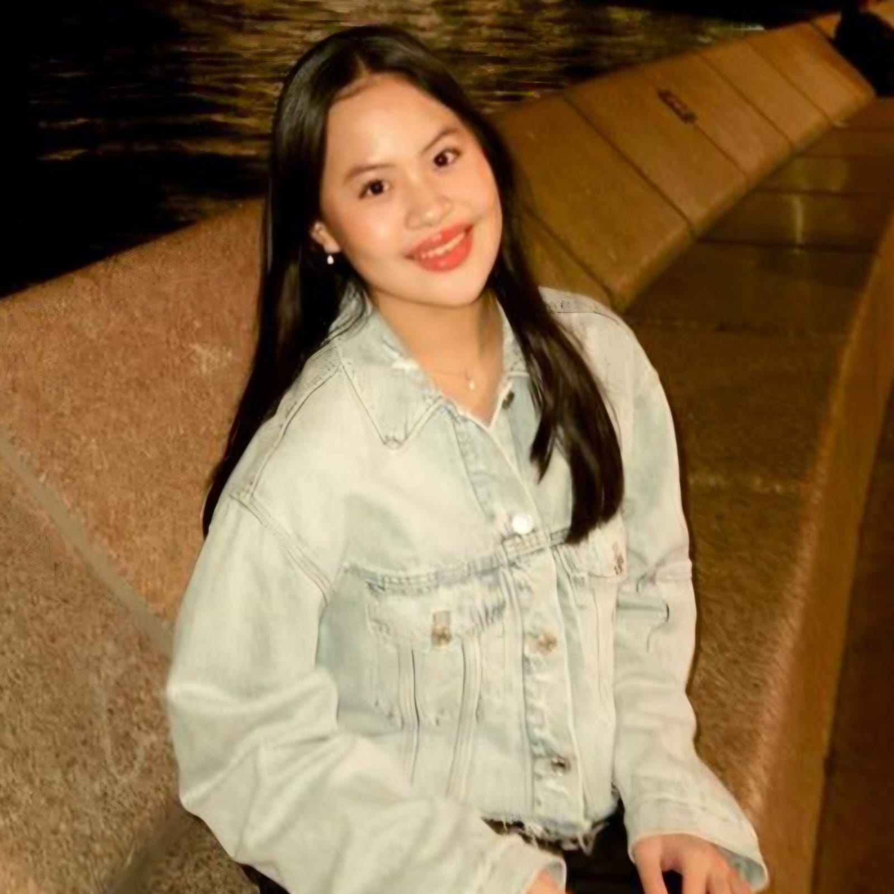

Felicia Stephanie (Fanny)
IX-4/13

Helena Gendis Haryanto
IX-4/18

Josephine Eve Kodiat (Joey)
IX-4/20

Keisha Audrey Jie
IX-4/21

Ludgera Mercia Radesti Prameswari
IX-4/24

Metta Caroline Liu
IX-4/30
This bazaar project was a practical exam for the ninth grade students of Santa Ursula Middle School. It is an integrated learning activity that is done by the students where many subjects collaborate as one huge project. This project makes it easier for students and teachers to score the assignment. These kinds of projects have been done since we were in seventh grade. In this era of modernization, students are expected to master other non-academic skills too. We learn these skills through the process of the group project itself, especially with classmates that we have only met that year. The main theme of this year’s bazaar is Indonesian folktales. My team got the Semangka Emas or the Golden Watermelon folktale from West Borneo as the primary theme. We prepared 6 edible products and 6 non-edible products, like keychains, scrunchie, and stickers.
This project was designed to help students develop teamwork skills and real-life learning experiences beyond regular classroom tests. Our group was formed with six members, and the Indonesian folktale Semangka Emas from West Borneo was chosen as our main theme. All main ideas for the booth were discussed and planned through group meetings. For us, “Semangka Emas” rings a few bells about tropical and beach-related themes, which will later be used for our booth design and presentation. For our booth, it was carefully designed according to the theme of the folktale, and the decorations were prepared several days before the bazaar started. We decided that the logo would be a golden watermelon alongside a sparrow. To not stray too far from our folktale theme, we also sell custom keychains that portray the main characters of the story, which are “Dermawan” and “Muzakir”. The keychains were made with illustrations of the characters.
A fermentation process was chosen as the main method in producing the biotechnology product, while a scrunchie was made as our prakarya (craft) product through sewing techniques. Several materials were prepared carefully before the production started. The products were designed to be simple and useful, and they were made with love so that the customers would be very happy to use and consume them. Various steps were followed systematically so that the expected results could be achieved. For us, both excitement and challenges were experienced during the implementation of this project. Biotechnology was not only studied in theory but was also applied in real life through this activity. At the same time, sewing skills were practiced and creativity was expressed through the making of the scrunchie. Many new concepts were introduced and were better understood through direct practice. However, some obstacles were faced during the process.
Just like other normal groups in class, each and every one of us would argue sometimes. Our journey in this group was not smooth and easy. Sometimes we had some miscommunication. One day, we realized that our problem was getting bigger and bigger each day. Because of this, we decided to do a consultation with Pak Iwan, our homeroom teacher, and Bu Endah, our counseling teacher. We didn’t get the perfect solution at the first meeting. But we tried to be as optimistic as possible that this problem would eventually get solved by itself. We kept trying to do the projects that were given to us at that moment. One of the hardest things for us in the beginning was to start making the financial report for social studies. It involves using Google Sheets with so many confusing formulas. But finally, we were able to finish making the format for the financial report. After the financial report, we also needed to make another report on what we were doing each time we had integrated learning. To make this report, we usually took notes on our progress each day and added the data we already had to the report.
In the end, solutions were found together, and discussions were continued just like before. Our friendship was rebuilt through better communication. A promise was made to communicate more clearly so the same problem would not be repeated. Support is given when someone has difficulties, instead of blame being given. Even though we had such little time left, stronger teamwork has been created. It is hoped that this good relationship will be kept until we graduate. From this experience, we learned that good communication and respect are very important in keeping a group united. This project has taught us a lot of things. To be patient, understanding, and to always do your best in everything you do.
Integrated learning project (ILP) merupakan sebuah program yang dilaksanakan oleh sekolah bagi para siswi SMP Santa Ursula Jakarta. ILP menggabungkan berbagai mata pelajaran ke dalam satu proyek. Siswi kelas 9 diberikan sebuah proyek besar, yaitu melaksanakan bazar dan pentas seni sebagai bagian dari ujian praktik. Proyek ini memberikan pengalaman langsung dalam berwirausaha atau berdagang serta kesenian dan cara bertampil di depan banyak orang.
Dalam kegiatan bazar ini, kelompok kami mengangkat tema dari salah satu cerita rakyat yang tidak banyak dikenal, yaitu Semangka Emas. Singkat cerita, Semangka Emas mengajarkan bahwa bantuan diberikan secara ikhlas tanpa adanya niat tersembunyi di belakang kebaikan tersebut. Kami mengembangkan ide dari cerita tersebut dan mengimplementasikannya pada berbagai produk kita serta desain booth kami. Keseluruhan dari kelompok kami, seperti poster, konten promosi, dan produk kami selalu menunjukkan sebuah semangka berwarna emas bersama dengan kedua maskot kami yang diambil dari cerita tersebut, yaitu Dermawan dan Muzakir.
Banyak sekali tahap yang dilewati selama proses persiapan menuju pelaksanaan bazar. Kami memulai dari perencanaan produk, di mana kami menentukan produk apa saja yang akan kami jual. Produk kami tentukan melalui berbagai proses, seperti kesesuaiannya pada target pembeli kami, yaitu anak-anak sekolah, dan penentuan harganya yang dipengaruhi oleh harga bahan atau HPP. Kami juga melakukan perencanaan promosi. Perencanaan promosi sendiri dilakukan melalui pencarian referensi dari berbagai media sosial untuk ide konten kami. Dan terakhir, kami juga melakukan perencanaan booth untuk menentukan desain dari booth kami saat berjualan nanti. Pembagian tugas dilakukan menurut kemampuan masing-masing anggota.
Selain bazar, proyek ini juga mencakup kegiatan pentas seni atau penampilan. Di bagian ini, siswi diberikan kesempatan untuk menampilkan kreativitas bersama-sama sebagai satu kelas dalam pentas seni. Selain itu, setiap kelompok juga diberikan kesempatan untuk menampilkan sebuah senam irama. Kelompok kami menampilkan senam dengan lagu Maumere yang cukup terkenal. Kegiatan ini menumbuhkan keberanian siswi dalam bertampil di depan banyak orang, sekaligus membangun kekompakan dan solidaritas antar siswi, baik dalam sekelas maupun sekelompok.
Secara keseluruhan, proyek ini memberikan sebuah pengalaman yang sangat berharga bagi para siswi. Para siswi diberikan pengalaman untuk berdagang secara langsung dan diberikan wadah untuk mengembangkan potensi mereka masing-masing. Kami dapat mengekspresikan kreativitas dan menunjukkan kemampuan kita masing-masing dalam bekerja sebagai kelompok bersama.
Dengan adanya kegiatan bazaar, siswi diberikan pengalaman berharga dalam berwirausaha, seperti belajar mengelola keuangan, melatih kreativitas, meningkatkan rasa percaya diri, serta mengasah kemampuan komunikasi dan kerja sama tim.
Dengan adanya kegiatan bazaar ini, sekolah dapat meningkatkan citra positif sekolah ke dalam masyarakat serta menjadi sarana untuk mempererat hubungan dengan orang tua dan juga masyarakat. Selain itu, bazaar juga dapat menjadi wadah untuk menampilkan kreativitas dan potensi siswa.
Dengan adanya kegiatan bazaar ini, guru dapat menjadikannya sebagai media pembelajaran yang menyenangkan di mana semua pelajaran digabung menjadi satu proyek, sekaligus melatih guru dalam membimbing siswi dalam berwirausaha, bekerja sama, dan bertanggung jawab terhadap tugas yang diberikan.
Dengan adanya proyek ini, pelaksana dapat mengembangkan kemampuan dan menunjukkan potensi yang mereka miliki seiring berjalannya dinamika dalam kelompok. Selain itu, proyek ini memenuhi nilai ujian praktik bagi para pelaksana.